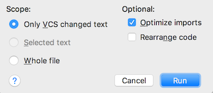

In general it should be regarded as bad form to reformat code which is not strictly part of a code change. This is not a strict rule as such, but using auto-reformatting of entire files leads to more problems than it solves. Sometimes it is however good to sneak in some obvious cleanup together with other changes.
Luckily IntelliJ has support for reformatting only code you have touched. The option is called "Only VCS changed text" and it is available in the reformatting dialogue. It is by default accessed by pressing shift-alt-cmd-L and it is recommended that you exclusively use this mode if you want to make use of auto-reformatting. There is also a way of doing the same when checking in code using IntelliJ.

If you use another editor then try to find similar functionality.
You can also adjust your local copy of the code style with changes that make sense for you but which do not generally affect others. Some examples are whether or not you want your code to wrap automatically when you go outside the margin as you type. Another example could be whether or not you want to keep the formatting of line breaks when you do an automatic reformatting. IntelliJ is to some extent mixing policy with mechanism here.
{kind=link}